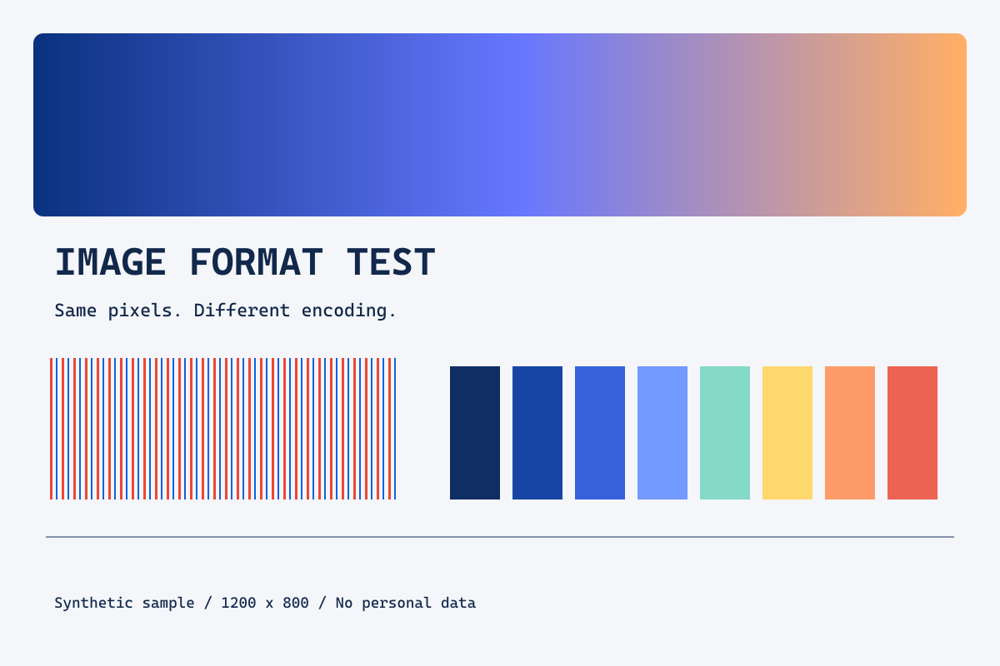

受け取り先の指定があればそれを優先します。指定がなければ、写真の共有にはJPEG、文字や透明部分を保ちたい図にはPNG、対応するWeb掲載先にはWebPを候補にし、実際の容量と見た目で決めます。
まずは「何を残したいか」で選ぶ
| 形式 | 特徴 | 選ぶときの確認 |
|---|---|---|
| JPEG（.jpg / .jpeg） | 一般的な保存では非可逆圧縮。透明部分は保持できない | 写真の共有先で使えるか、文字の輪郭が崩れていないか |
| PNG | 可逆圧縮。透明部分を扱える | 図や文字をくっきり保ちたいか。写真では容量が増える場合がある |
| WebP | 可逆・非可逆の両方と透明部分に対応 | 提出先や編集ソフトが受け付けるか |
可逆圧縮は、圧縮前の画素を元に戻せる方式です。非可逆圧縮は、一部の情報を省いて容量を減らします。非可逆で保存したものを後からPNGに変えても、失われた細部が戻るわけではありません。形式の性質はMDNの画像形式ガイドで確認できます。
「拡張子を .jpg に書き換える」だけでは変換になりません。変えるのはファイル名の表示だけです。画像ソフトの書き出し機能などで、内容自体を目的の形式に変換してください。
同じ画素から3形式を書き出した結果
この記事では、文字、細い色線、単色の長方形、なめらかな色の変化を含む1200×800pxの図を自作しました。写真やPCの画面を撮影したものではありません。SVGを一度RGBの画素に変換し、同じ画素から各形式へ保存しました。
| 出力 | 設定 | 容量（実測） |
|---|---|---|
| PNG | 圧縮レベル9 | 27,898 B（27.2 KiB） |
| JPEG | 品質80 / 4:2:0 | 53,392 B（52.1 KiB） |
| WebP | 非可逆・品質80 | 16,094 B（15.7 KiB） |
この図では、JPEGがPNGより大きくなりました。写真のような連続的な色変化だけでなく、細線や文字が多い図なので、「JPEGが必ず最小」という結果にはなりません。WebPが最小ですが、この1枚だけで、あらゆる画像に同じ順位が当てはまるとは言えません。
容量は出力ファイルのバイト数です。1 KiB＝1024バイトで表示しています。「品質80」はソフトや形式にまたがる共通の画質尺度ではなく、同じ80を指定しても同じ劣化量になるとは限りません。
計測日：2026年9月26日。sharp 0.35.4 / libvips 8.18.6。PNGのパレット化なし。JPEGはクロマサブサンプリング4:2:0、WebPは非可逆圧縮。EXIF・XMP・IPTCを含まないことを確認済みです。元の図は人工的なテスト図で、実写写真の代表ではありません。
形式を切り替えて、自分の目で確かめる
全体を見るときは文字の読みやすさ、細部を見るときは細い赤・青の線、グラデーションの境目を比較してください。下の表示は画面幅に合わせて縮小されるので、厳密に比べるなら同じ倍率で元画像を開きます。


画像選択やアップロードはありません。このサイトのサンプルだけを切り替えます。JavaScriptが使えない場合は、次のリンクから直接比較できます。


迷ったときの順番
- 提出条件を見る。「JPEGのみ」「2MB以下」などの指定を先に確認します。新しい形式でも、相手が開けなければ目的を果たせません。
- 透明部分が必要か決める。ロゴを別の背景に重ねるならPNGやWebPを候補にします。今回の比較サンプルは不透明なので、透明部分の比較には使えません。
- 文字と写真のどちらが中心か見る。小さい文字を読ませる図では、読めることを優先します。容量だけを見て強く圧縮しないようにします。
- 元データを残して書き出す。元のPNGからJPEGを作るなど、基準となる原本を残します。JPEGの保存を繰り返すと、設定により劣化が積み重なります。
- 実際の掲載サイズで確認する。スマートフォンでも、細字が読めるかを確認します。元画像だけが鮮明でも、ページ上で極端に縮小すると情報が伝わりません。
写真なら写真、図なら図として、最終的に使うものと似た素材で比較するのが大切です。この記事のサンプルを練習に使った後は、公開してよい自分の画像で同じ考え方を試してください。
参考資料・確認日
資料確認：2026年9月26日。機能や画面表記は更新により変わる場合があります。